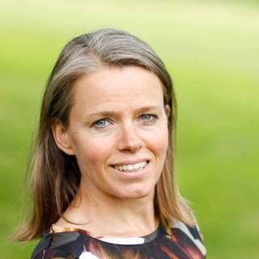
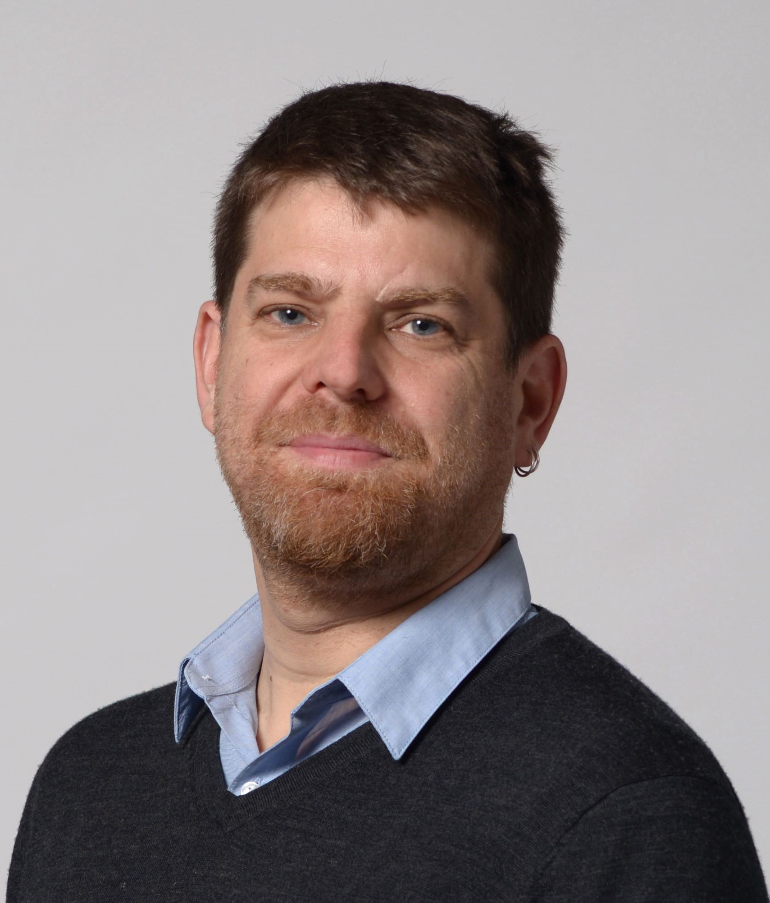
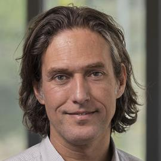

ICTAC 2026
November 11-13, 2026
Bariloche
Bariloche
The ICTAC Postgraduate School on Formal Methods for Building Mission-Critical Systems will be held at the NH Bariloche Edelweiss Hotel, Argentina, on November 9–10, 2026. It targets master’s and Ph.D. students, early-stage researchers, and lecturers in computer science and mathematics. The school offers specialized training in formal methodologies for developing critical software, particularly for the satellite, aerospace, automotive, and nuclear sectors. The program consists of tutorials (two 2-hour lectures) and short talks (1 hour) by leading experts in the area.

University of Twente
Mariëlle Stoelinga is Professor of Risk Management for high-tech systems at the Faculty of Electrical Engineering, Mathematics and Computer Science (EEMCS) at the University of Twente. In addition, she has a part-time position at the Software Science department of Radboud University Nijmegen. She is also programme manager for the executive master’s programme Risk Management, in which professionals are trained to be professional risk managers.
TBA

University of Buenos Aires - CONICET
Sebastian Uchitel is a Professor at Universidad de Buenos Aires, Principal Investigator at CONICET-Argentina, holds a Readership at Imperial College London. and is an affiliated researcher at Universidad de San Andrés, Argentina. His research interests are in behaviour modelling, analysis and synthesis applied to requirements engineering, software architecture and design, and in particular the use of synthesis at runtime to support system adaptation. He was Editor-in-Chief of the IEEE Transactions on Software Engineering and has served in editorial boards for CACM, REJ, and SCP.. He was program co-chair of ASE’06 and ICSE’10, and General Chair of ICSE’17. He has served on the board of directors of the Argentine national oil company, YPF, and held advisory roles to the Argentine government. He is a member of the Argentine National Academy of Exact, Physical and Natural Sciences.
TBA

IMDEA Software Institute
Cesar Sanchez is full (research) professor at the IMDEA Software Institute in Madrid, Spain. He holds a PhD from Stanford University in 2007. He was a postdoc at University of California Santa Cruz before joining the IMDEA Software Institute in 2008. His current research focuses on applications of logic to computer science and in formal methods for reactive systems, and in particular temporal logics for hyperproperties and runtime verification. His main practical interests are applications of runtime verification to autonomous systems and blockchain and smart-contract reliability.
TBA
Two 1-hour sessions led by distinguished experts. Speakers and topics: To be announced.